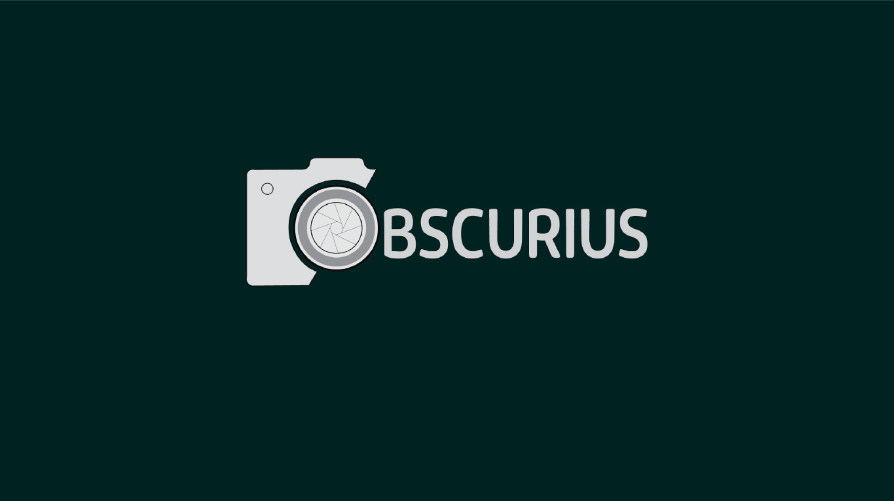

Informationsdesign
Obscurius – säsongskampanjer för sociala medier
Ett informationsdesignprojekt för kameraföretaget Obscurius där jag tog fram både en sommarkampanj för Instagram och en vintersäsongskampanj med digital reklambanner. Arbetet omfattade grafisk profil, färgpalett, bildval och kanal-anpassning för att lyfta företagets expertis och målgruppens höga krav. Designen utformades för att förmedla säsongernas känsla – från sommarens värme till det nordiska vinterljuset.
Visa case →